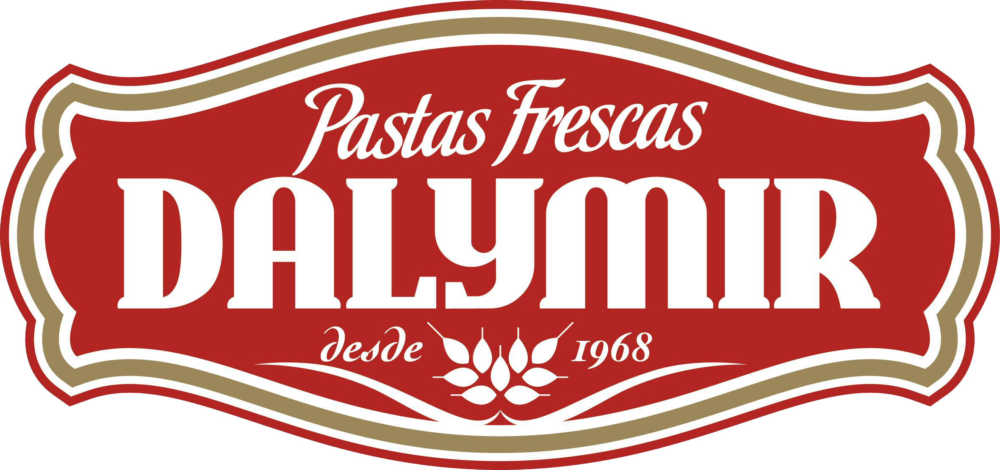
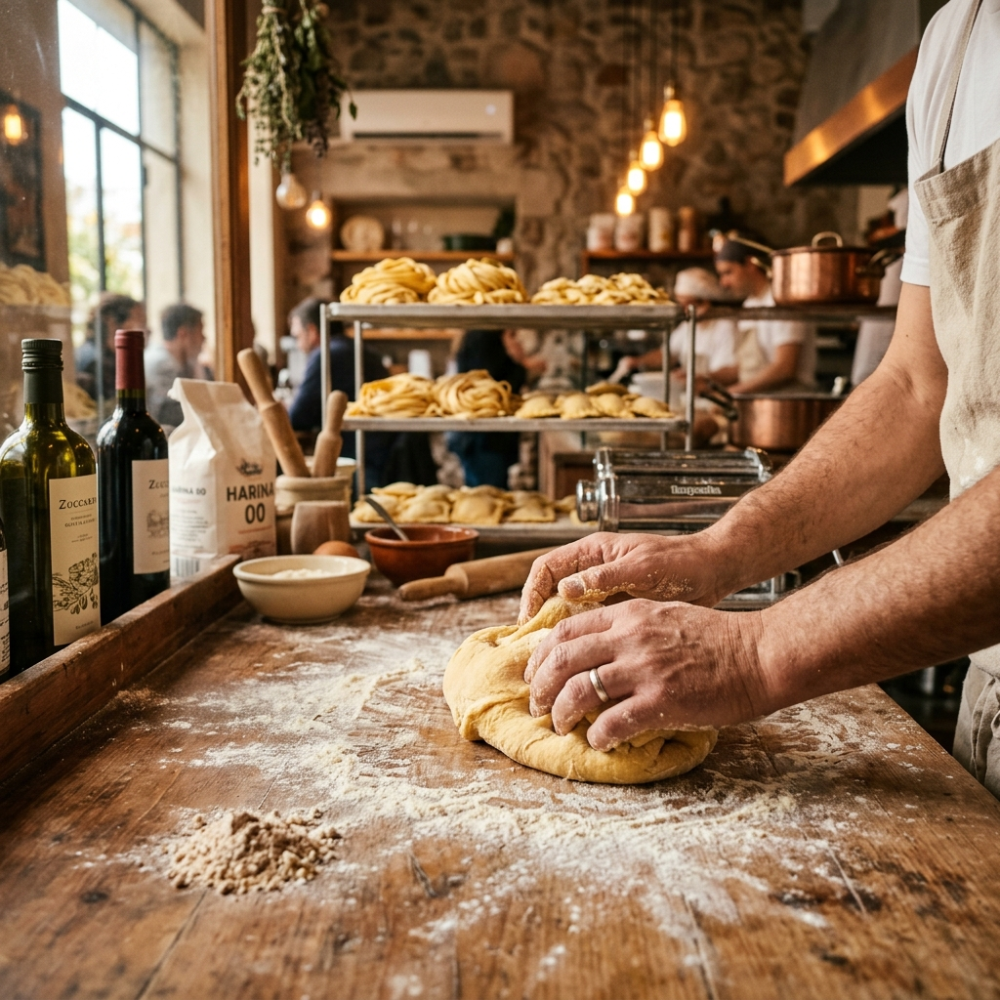
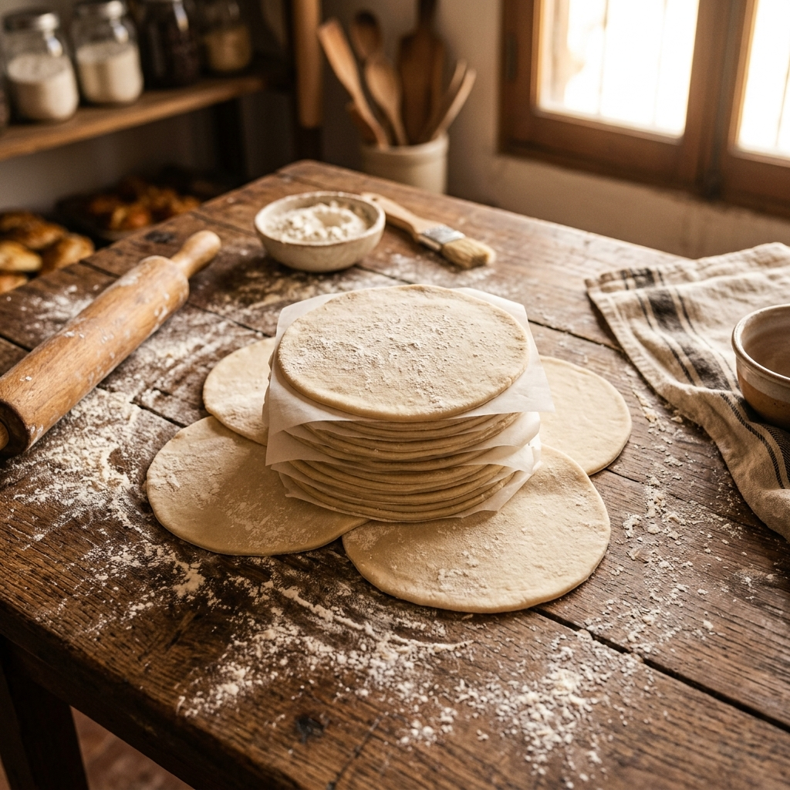
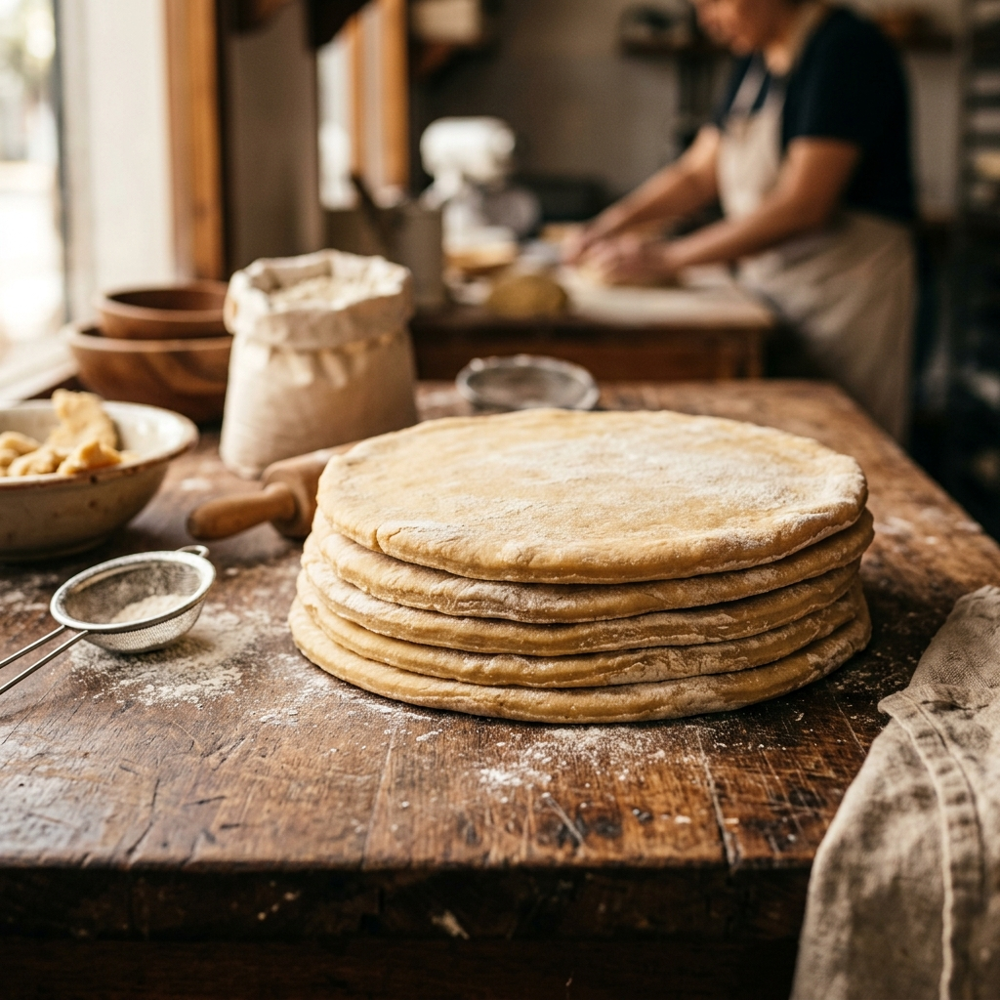
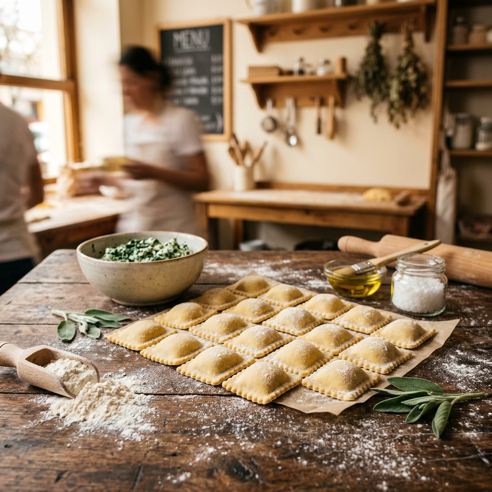
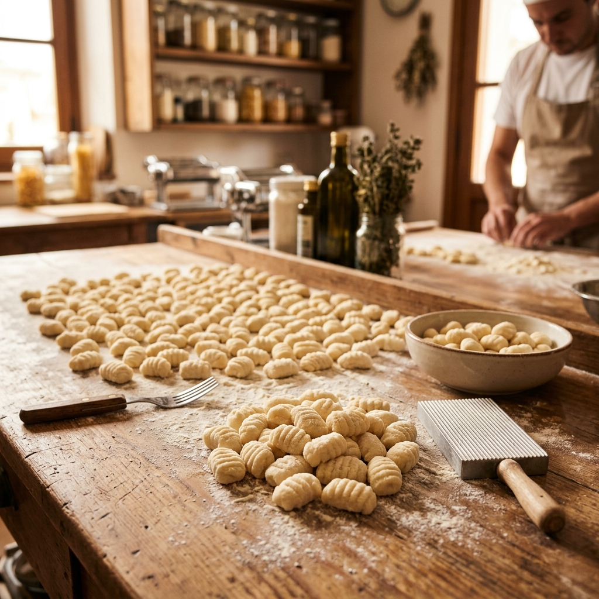
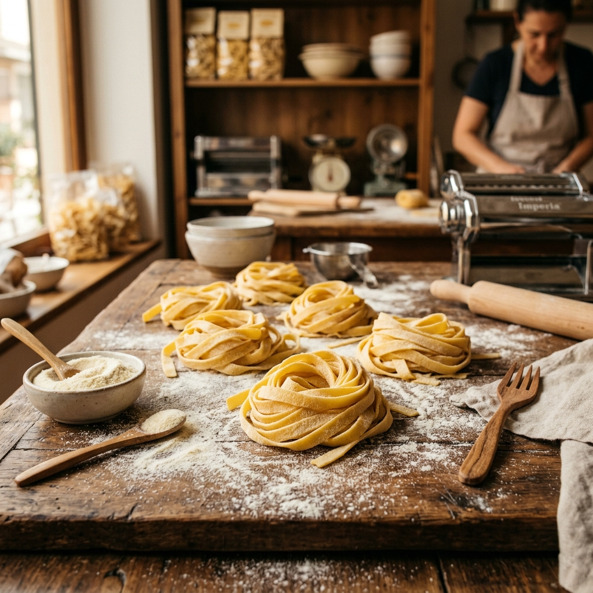

Desde 1968 elaborando calidad artesanal
Más de 55 años haciendo buena masa
En Dalymir comenzamos en 1968 como una fábrica dedicada a la elaboración de discos para empanadas. Con esfuerzo, trabajo familiar y el compromiso de hacer productos de calidad, fuimos creciendo junto a nuestros clientes.
Hoy, una de las raíces de aquellos primeros socios continúa al frente de la empresa, manteniendo viva la esencia de nuestros comienzos: elaborar buena masa, de manera artesanal, con materias primas seleccionadas y el mismo compromiso de siempre.

De una pequeña fábrica a la mesa de miles de familias
Lo que comenzó como una pequeña fábrica de discos para empanadas fue evolucionando con el tiempo, incorporando nuevas líneas de pastas frescas y ampliando la producción, sin perder nunca su identidad artesanal.
Elaboramos con pasión cada uno de nuestros productos

Criollos y hojaldre, ideales para empanadas al horno o fritas. Masa artesanal, fina y flexible.

Hojaldre y criollas, perfectas para tartas y pascualinas. Listas para rellenar y hornear.

Rellenos artesanales de verdura y ricota, jamón y queso, y calabaza. Masa fresca y tierna.

Tradicionales de papa y de espinaca. Elaborados a mano con ingredientes seleccionados.

Pastas frescas cortadas al estilo tradicional. Disponibles en distintos anchos y variedades.
Vení a visitarnos o escribinos
De la Nación 711, San Nicolás de los Arroyos
Buenos Aires, Argentina
Mar a Sáb: 9:00 a 13:00 y 16:30 a 20:30
Dom: 8:40 a 13:00
Lunes: Cerrado
Más de 55 años nos avalan
Los discos de empanada son los mejores de la zona. Siempre frescos, nunca se rompen y el sabor es increíble. Los compro hace más de 10 años.
Los ravioles de verdura y ricota son espectaculares. Se nota la calidad artesanal en cada bocado. Mi familia los ama.
Cada 29 compramos los ñoquis en Dalymir. Son tradición en casa. La masa es perfecta, bien liviana y se cocinan bárbaro.